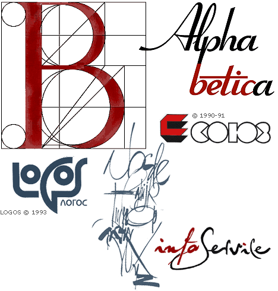
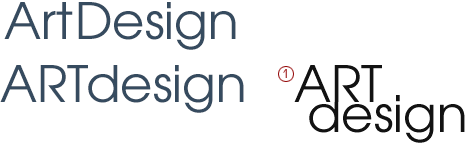
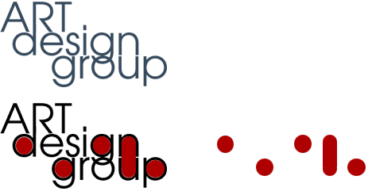
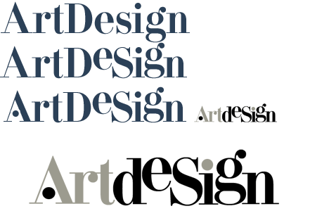
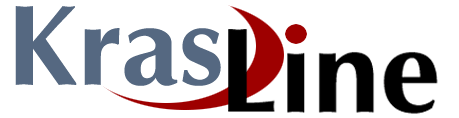
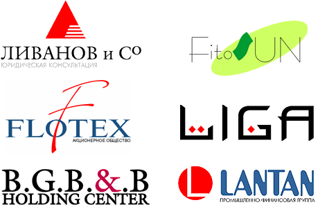

Из практики создания логотипов...
Все варианты техники создания логотипов рассмотерть невозможно, особенно в
части творческой. Но по части технологий основные приемы уже устоялись, особенно
в наше время активного развития компьютерных технологий. Приведу несколько
вариантов их своего личного практического опыта.
Вариант ручной графики.
Логотип разрабатывается и исполняется при помощи традиционных графических
средств - перьев, туши, бумаги, циркуля... Вариант самый долгий, самый
напряженный, но и самый выразительный. Ибо вы изначально предоставлены "чистому"
творчеству. В настоящий момент может быть использован для создания оригинальных
логотипов с уникальными шрифтовыми элементами (каллиграфический тип,
сложно-композиционный и др). Некоторые возможности "живой руки" невозможно
повторить даже при наличии высококачественной "таблетки" (дигитайзера).
Иногда для лучшего выражения идеи лого требуются разные (вариабельные :o)
начертания одного и того же символа. И очень часто такой прием используется в
начертаниях логотипа каллиграфического типа. Даже при наличии компьютера не
следует игнорировать "ручное" исполнение символов. Иногда даже случайность может
стать поводом для новой идеи.
В моей практике был пример, когда визуальное окружение логотипа требовало
случайных пятен в виде "набрызга". Были испробованы разные типы бумаги и щеток.
Затем с калькой я ползал по листу ватмана и искал наилучшее сочетание пятен и
символов. В итоге заказчик был доволен. К сожалению, оригинал не сохранился.

Техника фотонабора.
Такой вариант изготовления логотипа с появлением компьютера практически
исчез, он невыгоден из-за своей трудоемкости, требует фотооборудования,
лаборатории, работы с химреактивами. Но очень долгое время именно он позволял
исполнять логотипы с применением классических шрифтов из специальных фотокасс
(специальные комплекты шрифтовых негативов). Так же он позволял повторять удачно
найденный символ или элемент при ручном начертании.
Использование компьютерной техники.
Не мне рассказывать, насколько компьютер облегчает жизнь дизайнеру. И если
творческая часть, процесс мышления мало изменился, то по практической части
(человеко-часы :o) выигрыш составляет несколько порядков. Безусловными лидерами
при создании логотипов являются векторные пакеты CorelDRAW, FreeHand, Xara и
разумеется, Adobe Illustrator. Для перевода пиксельных изображений в векторные
используются в основном трассеры из пакета Corel, встроенный трассер в Xare и
Adobe Streamline. Но максимального качества трасссировки можно добиться, опять
же, при ручной обрисовке объекта в векторном пакете. Это требует большего
времени и труда, зато дает более точные результаты.
Шрифтовые кассы компьютеров так же невозможно сравнивать с тем, чтобыло
десять лет назад. Тысячи кириллизованных начертаний, десятки тысяч в латинице...
И хотя большая часть из них практически непригодна к использованию из-за своих
технических и художественных параметров, тем не менее выбор все равно
грандиозен. Даже сам процесс поиска идеи превращается иногда в интересное шоу.
Многие графические пакеты позволяют это в режиме прямого просмотра.
Конкретный пример.
Создание логотипа ArtDesign. По многим соображения было принято латинское
написание логотипа. Для начала был изучен графемно-ритмический ряд логотипа. Все
графемы можно разделить на несколько групп с общими визуальными признаками.
Треугольник (А, иногда Л, М, V, W), круг (О, С, Э, Ю -смешанный тип), квадрат
или прямоугольник (Ш, Н, П....). Выявив ритмические особенности, вы можете
пытаться применить определнные шрифты, ассоциативно подходящие по смыслу. Разные
по начертанию шрифты будут давать разный ритмический строй. Ну и другие факторы
тоже следует учитывать - динамика логотипа, плотность, активность-пассивность и
пр...
Анализ графем, общий ритмический ряд, а так же тема основной деятельности
фирмы привели к использованию в качестве основы шрифта AvantGarde. Его
строгость, выразительность и соответствие структуре логотипа соответствовали
задаче.
Следующим этапом является общая компоновка логотипа, поиск акцентных частей,
выразительность через символ основной мысли. В итоге из ArtDesign образовался
ARTdesign. Основной акцент ставился на слове ART. Перекомпоновка привела к
первому рабочему варианту логотипа.

Следующим этапом является проверка логотипа на масштабируемость. И тут
выяснилось, что выразительный в нормальных и крупных начертаниях, этот логотип
становился безликим и маловыразительным при сильном уменьшении. (Второй задачей
проверки на масштаб является проверка сплайновых кривых на "угловатость" и
"излом" линии при сильных увеличениях. Использование логотипа в наружной рекламе
иногда требует размера символов до метра и более. И вот тогда все огрехи шрифта
и трассирования станут видны невооруженным глазом).
Для исправления маловразительности при сильных уменьшениях было введено
дополнительное слово. Трехстрочный логотип сразу ожил. Анализ ритмического строя
просто радовал глаз. Вот пример анализа круглых элементов.

Такой вариант логотипа нас вполне устраивал. Но логотип не живет сам по себе.
Его окружает определенная среда. Плоскость экрана, буклета, бланка или визитной
карточки. Более того, логотип оказывает доминирующее влияние на организацию этой
среды, поскольку в большинстве случаев является основным акцентным средством,
доминирующим элементом в смысловом и визуальном смысле. И данный логотип со всем
этим великолепно справлялся. Но...
Но расширение сферы деятельности фирмы на среду традиционной живописи и
графики потребовала от логотипа выражения и этих аспектов. Любое внедрение
"живописных" элементов, мазков, пятен в логотип либо разрушало его строгий ритм,
либо портило общую композицию и выразительность. Было принято решение сделать
новый визуальный вариант. В качестве базового был выбран менее "чертежный" шрифт
Didona. Не буду по второму разу расписывать ход работы, думаю - понятно из
иллюстраций.

Пример совмещенного использования знака обслуживания и логотипа в единой
композиции.

Небольшое портфолио

Несколько практических советов из личного опыта работы с клиентами.
1. При получении заказа необходимо тщательно расспросить заказчика о его
видении, пожеланиях по поводу логотипа и всего стиля. Зная свою фирму изнутри,
ее особенности, он имеет некий желаемый образ логотипа.
2. Не следует предоставлять заказчику для рассмотрения много вариантов,
максимум 2-3, тщательно вами продуманных (даже если вы изготовили 50 вариантов).
Это не облегчит (как минимум) процесс выбора лучшего варианта. Заказчик вполне
может выбрать весьма посредственный, но чем - то близкий ему вариант.
3. Отвергнутый вариант логотипа - достаточно обыденная и реальная вещь. Не
стоит огорчаться по этому поводу. Следует расспросить заказчика о недостатках
варианта и исправить их в следующей версии, или попытаться найти кардинально
новое решение.
4. Не следует позволять заказчику отвергать логотипы по принципу "нравится -
не нравится". Требуйте обоснований. Если заказчик не может обосновать отказ,
возможно, он сам не знает, чего хочет. Следует поработать с ним на уровне
примеров из своего портфолио и других известных логотипов. Нужно уважать
клиента, но так же нужно уважать и свой труд.
5. Если вы не можете придти к компромиссу с заказчиком - возможно, вы не тот
дизайнер, который ему нужен. Порекомендуйте ему других известных вам дизайнеров
(за уровень и качество работы которых вы можете поручиться.)
6. Бывают заказчики, которые достаточно точно "представляют", чего они хотят.
Не следует походя воплощать их видения из простого желания заработать деньги.
Помимо гонорара вы работаете еще и на свой имидж дизайнера. ("Береги честь
смолоду" :o)
7. Если вы чувствуете, что не можете достойно выполнить заказ (а такое бывает
даже с очень маститыми профессионалами, хотя и редко) - объясните клиенту
причины ваших затруднений. Совместно вы сможете найти варианты решения проблемы
с привлечением других дизайнеров. Не стесняйтесь признаться в своих проблемах.
НО НЕ ДЕЛАЙТЕ СВОИ ПРОБЛЕМЫ ЧУЖИМИ!!! - в том смысле, что заказчику нет дела до
капризов вашего винта, ваших проблем с транспортом и личной жизнью.
14.09.99 © Виктор Вязьминов (MrDeSign)